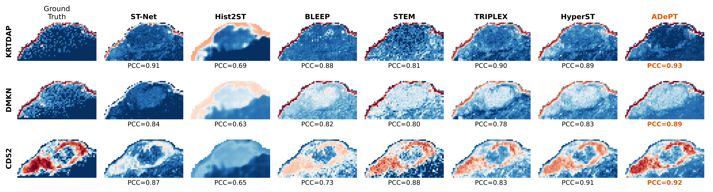
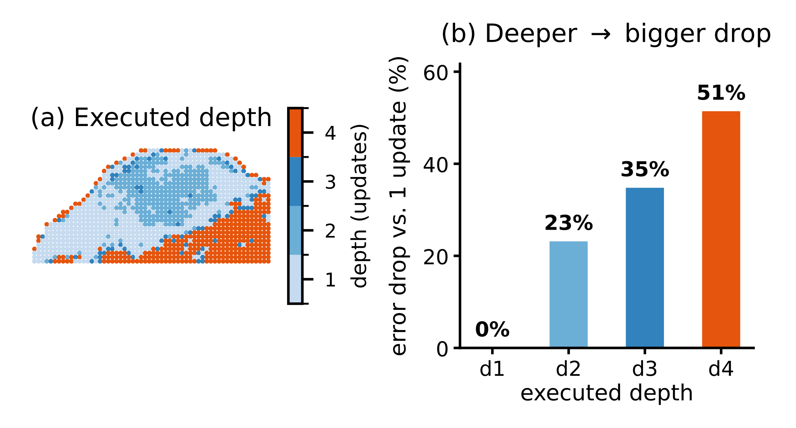

Each spot on a tissue slide gets as many network updates as it needs, and no more. A learned router decides when a spot stops.
†Corresponding author: weile@iastate.edu
Spatial transcriptomics measures gene expression at thousands of spots on a tissue section, but the assay is costly. Recent models therefore predict the expression of each spot from a routine histology image. These models give every spot the same number of network updates.
A slide is not uniform. A spot inside a uniform region is easy, and a spot at the boundary between two tissue compartments may need more context. ADePT applies one shared block repeatedly, and after each update a halting router decides, per spot, whether to stop.
TL;DRADePT matches a four-step fixed-depth model with 56.7% fewer updates, and has the highest mean accuracy among seven methods on five cohorts.
The same weights are reused at every update, so more depth adds computation but no parameters.
Attention over a fixed number of spatial neighbors plus a pooled slide summary. The cost is linear in the number of spots.
The router stops a spot from image features alone. A stopped spot still serves as context for its neighbors.
Spatial transcriptomics measures gene expression at thousands of locations (spots) in a tissue section, but the assay remains costly, so recent methods predict spot-level expression from routine histology images. These methods apply the same number of network updates to every spot, although a slide contains both uniform regions and boundaries between tissue compartments. We propose ADePT, an adaptive-depth network in which a learned halting router decides, for each spot, whether the spot stops or receives another update. To the best of our knowledge, ADePT is the first adaptive-depth method for spatial gene expression prediction from histology. ADePT applies one block with shared weights repeatedly. The block combines attention over a fixed number of spatial neighbors of each spot with a pooled slide summary, so the attention cost is linear and not quadratic in the number of spots. On five HEST-1k cohorts, ADePT attains the highest mean Pearson correlation among seven methods on every gene-panel size and gene-selection strategy. On the 50-gene panel, ADePT executes 56.7% fewer updates, averaged over cohorts, than a separately trained model that applies the same block architecture at a fixed depth of four. ADePT also has the highest mean accuracy on every organ held out of training.
ADePT applies one shared local–slide block repeatedly, and a halting router learns how many updates each spot receives.
The highest mean Pearson correlation among seven methods on three gene-panel sizes and two further gene-selection strategies, and the highest mean correlation on every held-out organ, where the gain over the strongest baseline is not significant.
On the 50-gene panel, 57% fewer updates than the same block at a fixed depth of four, with the same mean correlation to three decimals. Measured FLOPs fall on all five cohorts and latency on four.
Pick a gene panel and a cohort. The cohorts cycle while the chart is on screen.
Three marker genes on the held-out skin slide TENX117. Pick a gene and a method; click a picture to enlarge it.

Gray: the same block trained at a fixed depth of 1 to 4. Star: ADePT. 50-gene panel.
Change in PCC per cohort, and how many updates ADePT saves.
Share of test spots by executed depth, with the mean depth on the right. 50-gene panel.
Slide TENX117: drop in error at the executed depth, against stopping after one update.

50-gene panel on an NVIDIA A100. Switch between executed updates, GFLOPs and latency.
Each tab removes or replaces one part of ADePT. The tabs cycle while the chart is on screen.
Train on four organs, test on the fifth. 50-gene panel, mean over three seeds.
The manuscript is under review. It is not yet accepted or published.
@misc{howlader2026adept,
title = {Learning When to Stop: Adaptive Depth for Spatial Gene Expression Prediction from Histology},
author = {Howlader, Koushik and Roy, Tirtho and Islam, Md Tauhidul and Le, Wei},
year = {2026},
note = {Under review}
}